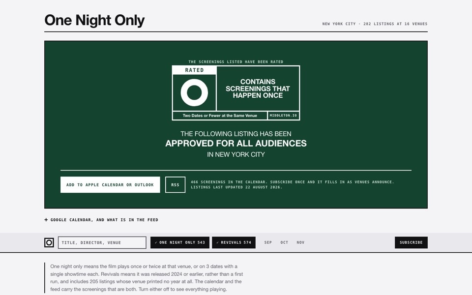

Archived September 2026 · the Window Shelf exploration, runner-up to the trading cards← Back to the archive
What I'm Building Now
Window Shelf treatment · exploration
Film calendar
One Night Only
A calendar for the repertory houses. It scrapes the one-night screenings nobody lists in one place, and tells you what is playing tonight before the seats go.
- Shipped
- Aug 2026
- Built with
- Scrapers · one feed